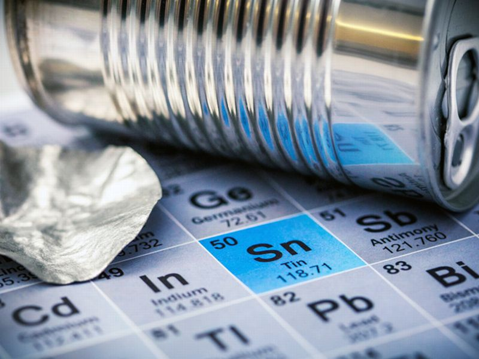
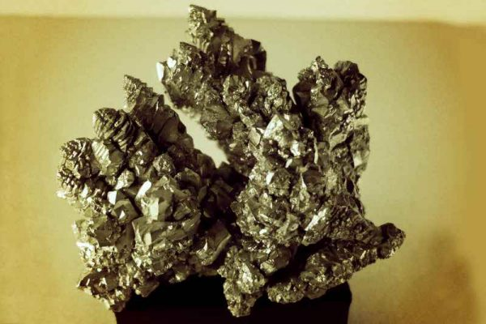
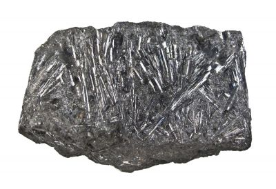

Олово
О́лово (химический символ — Sn, от лат. Stannum) — химический элемент 14-й группы (по устаревшей классификации — главной подгруппы четвёртой группы, IVA), пятого периода периодической системы химических элементов Д. И. Менделеева, с атомным номером 50. Относится к группе лёгких металлов.

Олово известно с доисторических времён, упоминается в Ветхом Завете. По свидетельству Гомера, руды олова добывали на Касситеридах – Британских островах. Сплавы олова с медью (бронзы) известны с 3-го тыс. до н. э., чистый металл – со 2-го тыс. до н. э. В древности из олова делали украшения, посуду, утварь. В Древнем Египте из олова делали украшения, напаянные на другие металлы. С конца 13 в. в Западной Европе из олова изготавливали сосуды, церковную утварь, парадные чаши, блюда, кубки с рельефными изображениями (гербы, мифологические, жанровые сцены). В России изделия из олова (рамы зеркал, утварь) получили широкое распространение в 17–18 вв.

Промышленное получение олова целесообразно, если содержание его в россыпях 0,01 % по массе, в рудах 0,1 %. Обычно в рудах олова сопутствуют W, Zr, Cs, Rb, Та, Nb, редкоземельные и другие элементы. Первичное сырьё обогащают: россыпи – преимущественно гравитационным, руды – флотационным или флотогравитационным методом. Концентраты, содержащие 50–70 % олова, обжигают для удаления серы, очищают от железа действием HCl; если присутствуют примеси вольфрамита (Fe,Mn)WO4 и шеелита CaWO4, концентрат обрабатывают HCl; образовавшуюся WO3·H2O извлекают с помощью раствора NH3. Плавкой концентратов с углём в электрических или пламенных печах получают черновое олово (94–98 % Sn), содержащее примеси Cu, Pb, Fe, As, Sb, Bi. При выпуске из печей черновое олово фильтруют при температуре 500–600 °C через кокс или центрифугируют, отделяя основную массу примеси железа. Остаточное количество Fe и Cu удаляют, добавляя в жидкий металл серу; примеси всплывают в виде твёрдых сульфидов, которые снимают с поверхности олова. От примесей мышьяка и сурьмы олово рафинируют, добавляя алюминий, от свинца – с помощью SnCl2. Примеси Bi и Pb отделяют также вакуумированием. Электролитическим рафинированием и зонной перекристаллизацией получают особо чистое олово. Значительная часть всего производимого олова составляет вторичный металл; его получают из отходов белой жести, лома и различных сплавов (степень рециркуляции олова составляет более 20 %). Объём мирового производства олова 329 тыс. т/год (2019).

Содержание олова в земной коре 8·10–3 % по массе. Самородное олово в природе не встречается. Известно около 20 минералов олова. Промышленное значение имеет касситерит (оловянный камень) SnO2, в меньшей степени – станнин (оловянный колчедан) Cu2FeSnS4. Концентрирование олова связано как с магматическими процессами (известны «оловоносные граниты», пегматиты, обогащённые оловом), так и с гидротермальными процессами; касситерит встречается также в россыпях. В биосфере олово мигрирует слабо, в морской воде его лишь 3·10–7 %; известны водные растения с повышенным содержанием Sn
Олово – компонент сплавов: с медью (бронзы), медью и цинком (латунь), сурьмой (баббит), свинцом (припой), цирконием, титаном, ниобием (атомные реакторы, турбины, сверхпроводники) и др. Олово используется для нанесения покрытия на металлы, в том числе на лужение белой жести, изготовление фольги, деталей измерительных приборов, теплообменников, художественных изделий и др. Оксид SnO2 применяется для изготовления жаростойких эмалей и глазурей. Соли олова(II) используются в протравном крашении тканей. Кристаллический SnS2 («сусальное золото») входит в состав красок, имитирующих позолоту, фторид олова – добавка во фторсодержащих зубных пастах.